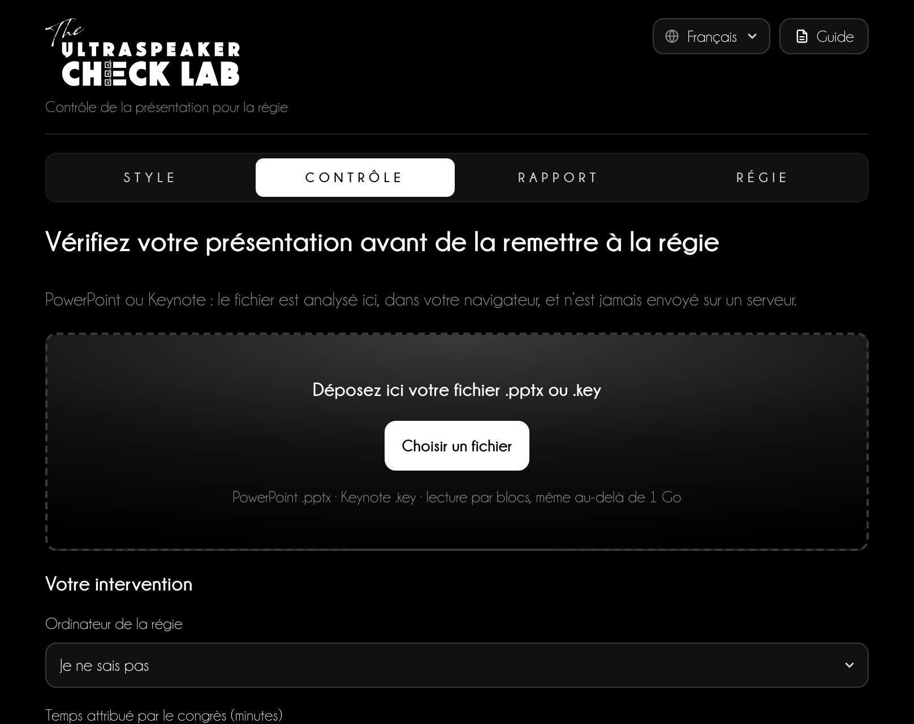
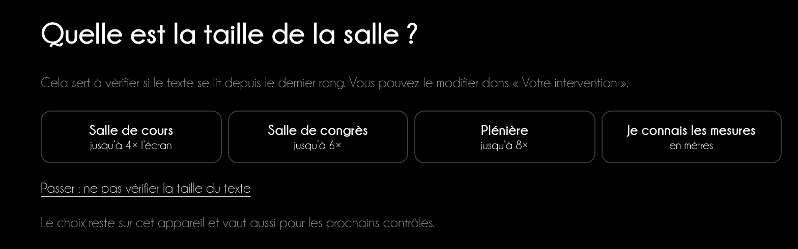
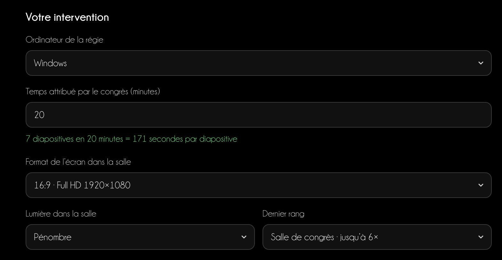
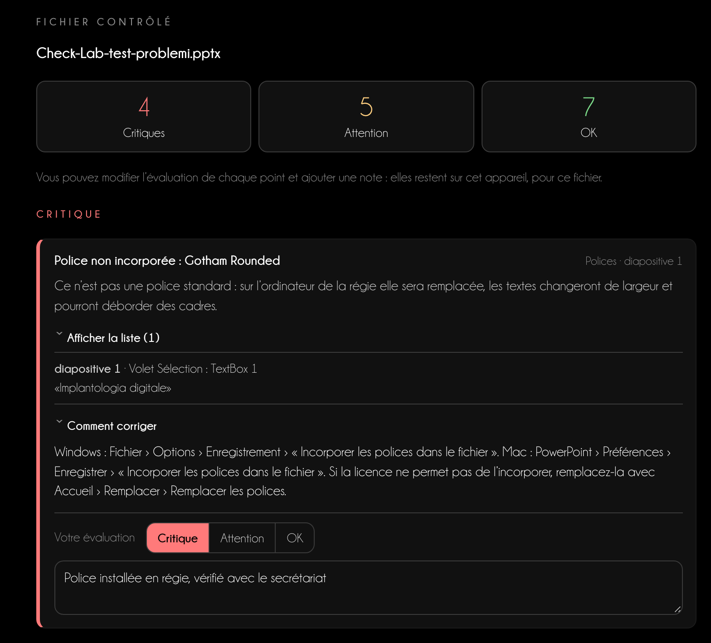
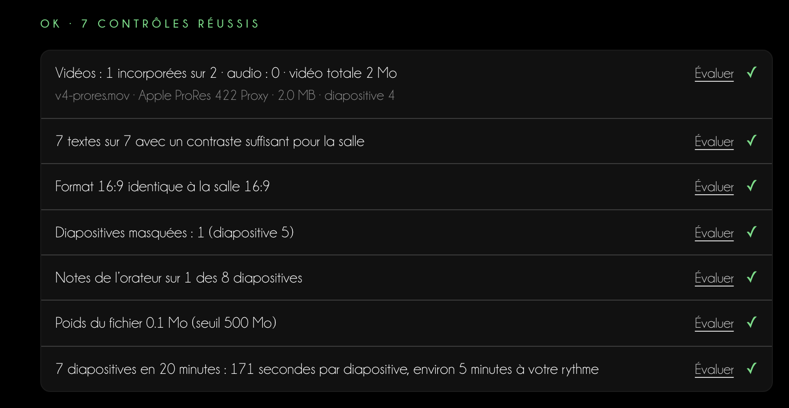
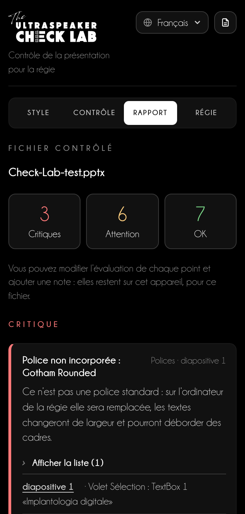
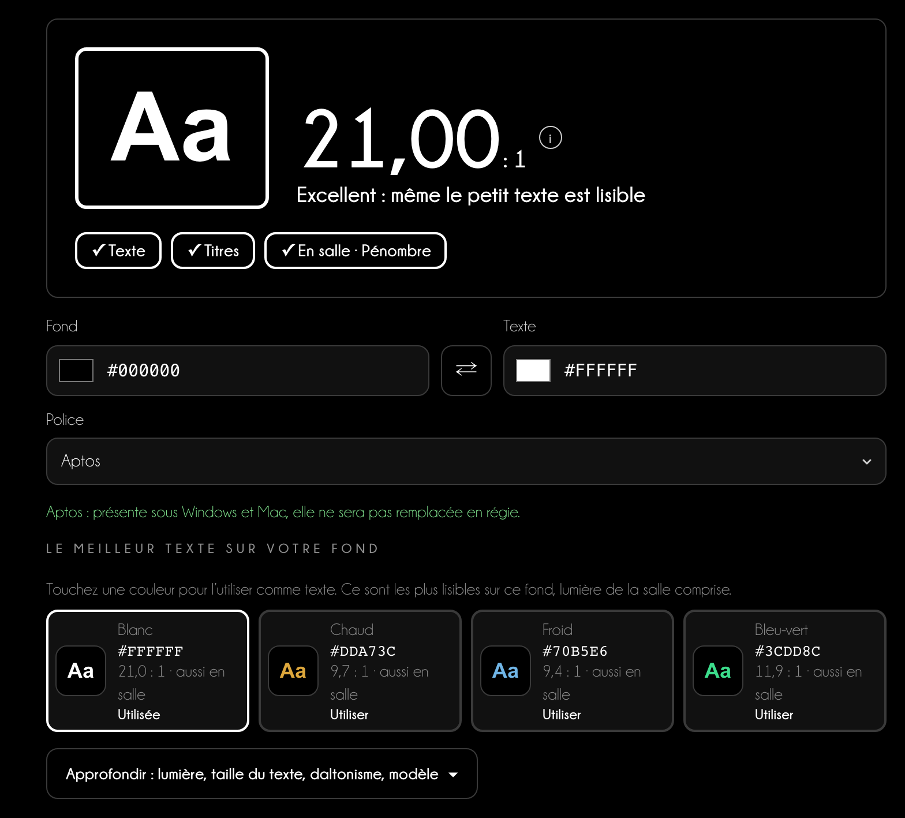
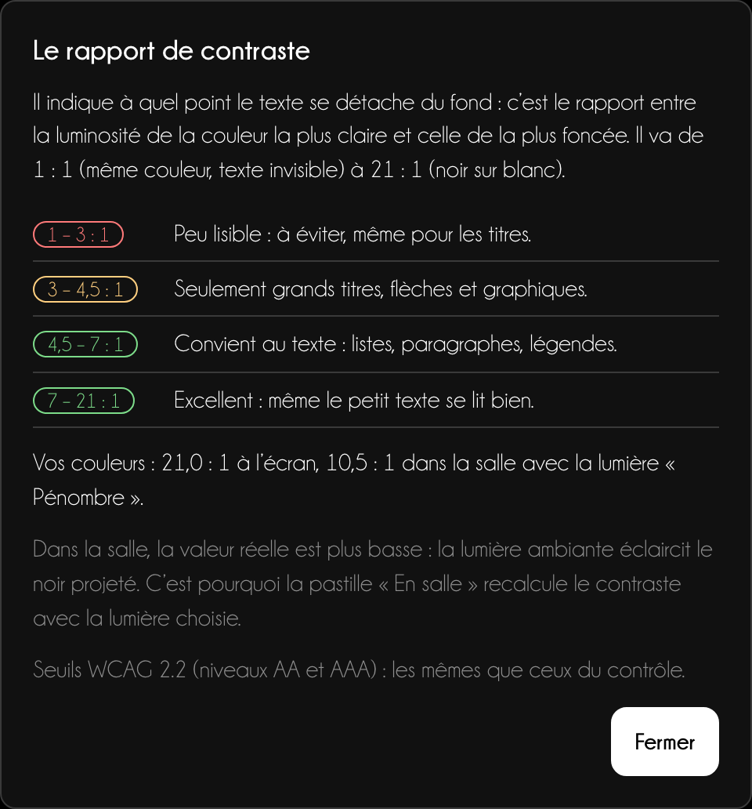
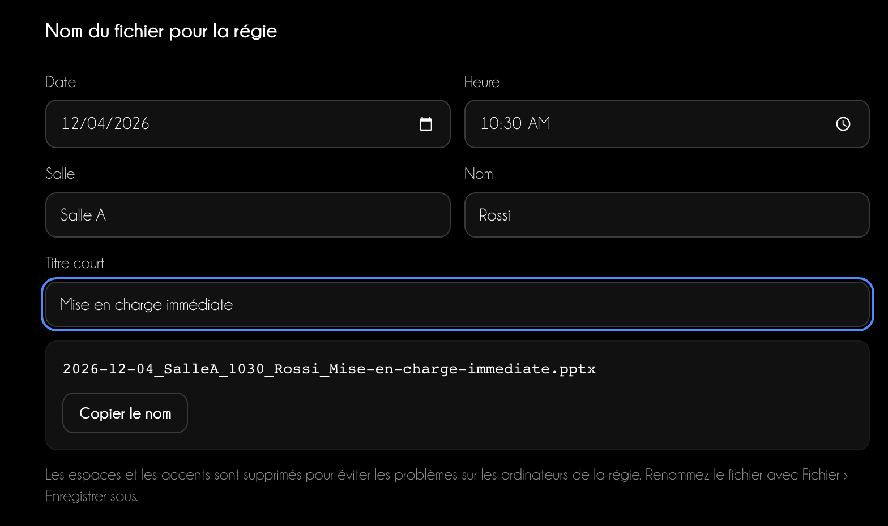
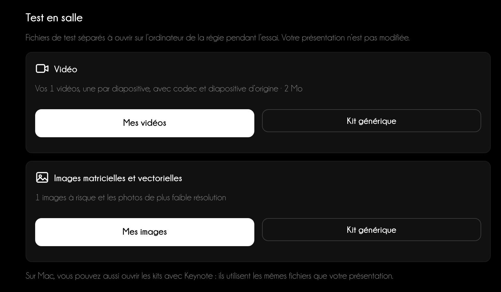

Guide d'utilisation
Votre présentation prête
pour la régie
Contrôlez polices, vidéos, images, lisibilité, format et durée d’une présentation PowerPoint ou Keynote avant de la remettre au congrès.
Guide d'utilisation
Contrôlez polices, vidéos, images, lisibilité, format et durée d’une présentation PowerPoint ou Keynote avant de la remettre au congrès.
Sommaire
Check Lab lit votre présentation et vous dit ce qui risque de ne pas fonctionner sur l’ordinateur de la régie : une police absente, une vidéo qui ne démarre pas, un texte illisible depuis le dernier rang.
Dans le navigateur
niki977.github.io/ultraspeaker-check-lab. Déposez un fichier .pptx (PowerPoint) ou .key (Keynote). Fonctionne sur ordinateur, tablette et téléphone.
Dans PowerPoint
Onglet Accueil → groupe The Ultraspeaker → Check Lab. Le volet contrôle la présentation ouverte et vous mène à la diapositive du problème avec « Aller à la diapositive ».
Bientôt disponible
Le volet PowerPoint est en phase de test et sera bientôt disponible. En attendant, utilisez la version web : elle fait les mêmes contrôles.
| Ce qu’il contrôle | Exemples |
|---|---|
| Polices | non incorporées, Windows seulement ou Mac seulement |
| Vidéo et audio | liés au lieu d’incorporés, formats qui ne démarrent pas, 4K |
| Images | basse résolution, fichiers lourds, EPS, CMJN, HEIC |
| Lisibilité | contraste avec le fond et sur les photos, taille pour le dernier rang, graphiques pour qui confond rouge et vert |
| Format et fichier | format de l’écran, diapositives vides ou masquées, liens, poids |
| Durée | secondes par diapositive par rapport au temps attribué |
Confidentialité
Le fichier est lu uniquement sur votre ordinateur et n’est jamais envoyé à un serveur. La langue, les réglages de l’intervention, la check-list et vos évaluations du rapport restent sur l’appareil.
Quatre onglets en haut. On commence par Contrôle ; Style sert avant de créer les diapositives, Régie le jour de l’intervention.

1234Il suffit d’une minute et du fichier de la présentation. Plus vous donnez d’informations sur l’intervention, plus le rapport est précis.


Dernier rang
Salle de cours, salle de congrès ou plénière : la taille minimale du texte dépend de la distance du dernier rang. Si vous connaissez les mesures, choisissez « Je connais les mesures » et saisissez hauteur de l’image et distance en mètres.
Le rapport ne donne pas de note : un orateur doit souvent faire des compromis, et c’est vous qui décidez du poids de chaque problème.

123456Vos évaluations restent sur cet appareil, liées au fichier : si vous corrigez la présentation et la contrôlez à nouveau, vous les retrouvez. Effacer mes évaluations les efface. Avec Exporter en PDF ou Copier le rapport, vous transmettez le rapport au secrétariat ou à votre assistant.


Dans le volet PowerPoint, chaque diapositive du rapport est cliquable et vous mène directement au point à corriger.
Les avertissements les plus fréquents et la correction la plus rapide. Le conseil complet se trouve toujours dans « Comment corriger ».
| Avertissement | Que faire |
|---|---|
| Police non incorporée | PowerPoint : Fichier › Options › Enregistrement › « Incorporer les polices dans le fichier ». Si la licence ne le permet pas, remplacez la police. |
| Vidéo liée ou en ligne | Insérez-la depuis l’ordinateur (Insertion › Vidéo › Cet appareil) : le fichier doit être dans la présentation. |
| Vidéo en .mov, ProRes, WMV | Convertissez-la en MP4 H.264, par exemple avec HandBrake, et insérez-la à nouveau. |
| Images en basse résolution | Remplacez-les par l’original, au moins de la largeur en pixels indiquée. |
| Texte peu lisible | Utilisez la couleur proposée ; dans le volet, appuyez sur « Appliquer ». |
| Texte sur photo | Placez un bandeau semi-transparent derrière le texte ou déplacez le texte sur une zone uniforme. |
| Texte trop petit | Agrandissez-le ou répartissez le contenu sur deux diapositives. |
| Fichier lourd | Format de l’image › Compresser les images, 220 ppp, supprimer les zones rognées. |
Avant de créer les diapositives, choisissez fond, couleur du texte et police : vous voyez aussitôt s’ils seront lisibles en salle.

12345
| Rapport | Usage |
|---|---|
| sous 3 : 1 | peu lisible, à éviter |
| à partir de 3 : 1 | seulement grands titres, flèches, graphiques |
| à partir de 4,5 : 1 | texte normal, listes, légendes |
| à partir de 7 : 1 | excellent, même le petit texte |
Polices téléchargées
Avant d’utiliser une police de Dafont ou d’un autre site, vérifiez la licence : beaucoup sont « pour usage personnel uniquement ». Pour l’incorporer dans PowerPoint, la licence doit le permettre.
L’onglet Régie prépare la remise : le nom du fichier, la check-list du jour et les fichiers de test à ouvrir en salle.


Kit images
Sur la diapositive SVG, le titre de l’image doit indiquer « SVG ». Si vous lisez « PNG », cet ordinateur n’affiche pas le vectoriel et utilise l’aperçu de secours.
Check Lab trouve les problèmes du fichier. Ces trois habitudes évitent ceux de la salle.
Remettez-la la veille
Envoyez le fichier au secrétariat au moins 24 heures avant, nommé au format de la régie, et apportez une clé USB avec la présentation et un PDF de secours.
Essayez en salle 30 minutes avant
Ouvrez le kit « Test en salle » sur l’ordinateur de la régie : en deux minutes, vous savez si vidéo, audio et images fonctionnent.
Écrivez pour le dernier rang
Dans une salle de congrès avec un écran 16:9, il faut environ 32 pt dans PowerPoint. Si un texte ne tient pas, répartissez-le sur deux diapositives au lieu de le réduire.
Assistance
Écrivez à info@theultraspeaker.com en indiquant ordinateur, version de PowerPoint ou navigateur et ce qui apparaît à l’écran. Inutile d’envoyer la présentation.

Knowledge is not enough.
From expert to Ultraspeaker.
theultraspeaker.com · info@theultraspeaker.com